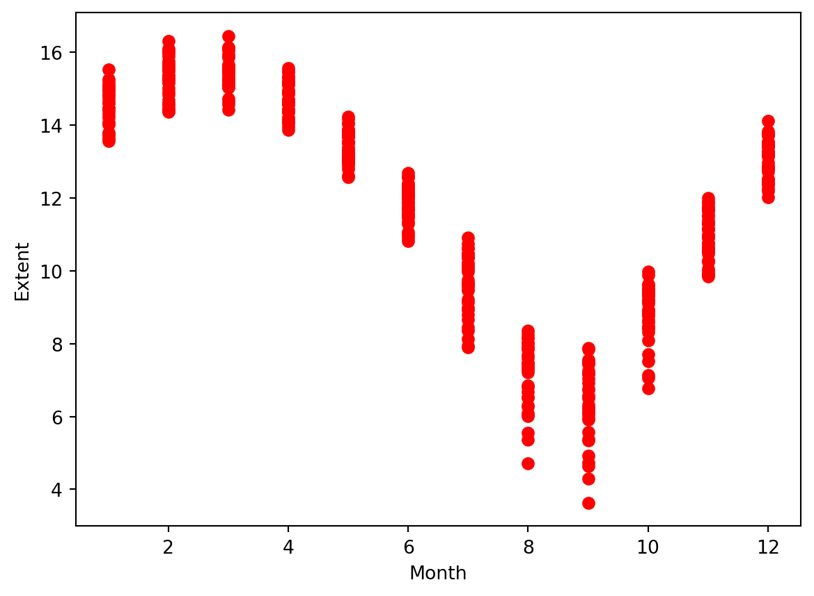
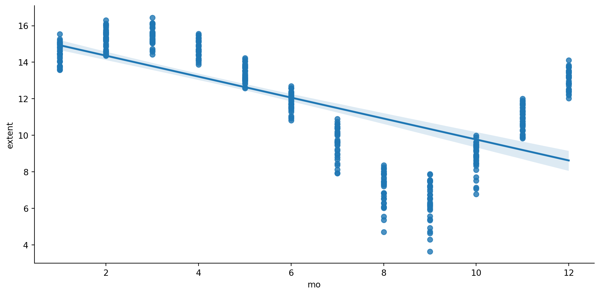
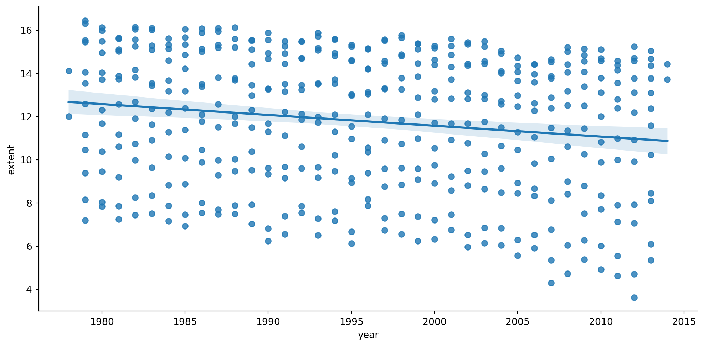

In this lab, inspired by Igual and Seguí (2017), we will introduce simple linear regression in Python to try to answer the question: Has there been a decrease in the amount of ice in the last years? To do so, we are going to use Scikit Learn, a machine learning library, and the Sea Ice Index Daily and Monthly Image Viewer dataset from the National Snow and Ice Data Center.
12.1 Key concepts’ refresher
Let’s refresh some theoretical concepts to understand what we are going to do.
12.1.1 Simple and Multiple Linear Regression
In the linear model the response \(\textbf{y}\) depends linearly from the covariates \(\textbf{x}_i\).
In the simple linear regression, with a single variable, we described the relationship between the predictor and the response with a straight line. The general linear model: \[ \textbf{y} = a_0+ a_1 \textbf{x}_1 \]
The parameter \(a_0\) is called the constant term or the intercept.
In the case of multiple linear regression we extend this idea by fitting a m-dimensional hyperplane to our m predictors.
The \(a_i\) are termed the parameters of the model or the coefficients.
12.1.2 Ordinary Least Squares
Ordinary Least Squares (OLS) is the simplest and most common estimator in which the coefficients \(a\)’s of the simple linear regression: \(\textbf{y} = a_0+a_1 \textbf{x}\), are chosen to minimize the square of the distance between the predicted values and the actual values.
This expression is often called sum of squared errors of prediction (SSE).
12.2 Case study: Climate Change and Sea Ice Extent
Remember, we are trying to answer the following research question: Has there been a decrease in the amount of ice in the last years?
12.2.1 Data assessment
First, let’s load the SeaIce.txt dataset that is already in the data folder1. It is a text file, but unlike csv files, where columns are separated by commas (,), it is a Tab separated file, where each Tab delimites the following columns:
region: Hemisphere that this data covers (N: Northern; S: Southern)
extent: Sea ice extent in millions of square km
area: Sea ice area in millions of square km
Once we upload the data, we can create a DataFrame using Pandas using the well known read_csv() function, but in this case, because columns are not separated by commas as expected, but Tabs, we will need to use the delim_whitespace=True argument.
import warningswarnings.filterwarnings('ignore')import pandas as pdice = pd.read_csv('data/raw/SeaIce.txt', delim_whitespace=True)ice.info()
<class 'pandas.core.frame.DataFrame'>
RangeIndex: 424 entries, 0 to 423
Data columns (total 6 columns):
# Column Non-Null Count Dtype
--- ------ -------------- -----
0 year 424 non-null int64
1 mo 424 non-null int64
2 data_type 424 non-null object
3 region 424 non-null object
4 extent 424 non-null float64
5 area 424 non-null float64
dtypes: float64(2), int64(2), object(2)
memory usage: 20.0+ KB
ice.head()
year
mo
data_type
region
extent
area
0
1979
1
Goddard
N
15.54
12.33
1
1980
1
Goddard
N
14.96
11.85
2
1981
1
Goddard
N
15.03
11.82
3
1982
1
Goddard
N
15.26
12.11
4
1983
1
Goddard
N
15.10
11.92
And we can get some summary statistics from the numerical attributes:
ice.describe()
year
mo
extent
area
count
424.000000
424.000000
424.000000
424.000000
mean
1996.000000
6.500000
-35.443066
-37.921108
std
10.214716
3.474323
686.736905
686.566381
min
1978.000000
1.000000
-9999.000000
-9999.000000
25%
1987.000000
3.000000
9.272500
6.347500
50%
1996.000000
6.500000
12.385000
9.895000
75%
2005.000000
10.000000
14.540000
12.222500
max
2014.000000
12.000000
16.450000
13.840000
Warning
Did we receive a negative mean for extent and area? What this could possibly mean? Probably, inspecting those attributes visually could give us a clue.
12.2.2 Data visualisation to explore data
We will use Seaborn’s lmplot() function to explore linear relationship of different forms, e.g. relationship between the month of the year (variable) and extent (responses):
import matplotlib.pyplot as pltimport numpy as npimport pandas as pdimport seaborn as sns
# Visualize the dataplt.scatter(ice.mo, ice.extent, color ='red')plt.xlabel('Year')plt.ylabel('Extent')
Text(0, 0.5, 'Extent')
Warning
We detect some outlier or missing data. This might have to do with those negative mean values that we detected previously.
We can use numpy’s function np.unique() to find the unique elements of an array.
print ('Different values in data_type field:', np.unique(ice.data_type.values)) # there is a -9999 value!
Different values in data_type field: ['-9999' 'Goddard' 'NRTSI-G']
Let’s see what type of data we have, other than the ones printed above
We checked all the values and notice -9999 values in data_type field which should contain Goddard or NRTSI-G (some type of input dataset).
In this case, we will clean them by creating a copy of the original dataframe that does not include these instances.
Dataframe copies vs instances
Unless we do not explicitly create a copy of a dataframe, when subsetting a dataframes we are actually creating instances. Whereas copies are totally independent objects from the original one, instances are reduced “views” from the original, meaning that if we change a value on the instance, we are also changing the value on the original data frame, which may not be what we wanted to do.
# We can easily clean the data now:ice2 = ice[ice.data_type !='-9999'].copy()print ('shape:', ice2.shape)
shape: (422, 6)
# And repeat the plot, without the outliersplt.scatter(ice2.mo, ice2.extent, color ='red')plt.xlabel('Month')plt.ylabel('Extent')
Text(0, 0.5, 'Extent')

#here is the same plot but using the seaborn library. A transition to the Seaborn plot we have in the next cell.#sns.relplot(ice2, x = "mo", y = "extent", aspect = 2)
12.3 Regression model fit
Now that we have a clean dataset, we can use Seaborn’s lmplot() function comparing month vs extent.
The lmplot() function from the Seaborn module is intended for exploring linear relationships of different forms in multidimensional datesets. Input data must be in a Pandas DataFrame. To plot them, we provide the predictor (mo) and response (extent) variable names along with the dataset (ice2).
sns.lmplot(ice2, x ="mo", y ="extent", aspect=2);# Uncomment below to save the resulting plot.#plt.savefig("figs/CleanedByMonth.png", dpi = 300, bbox_inches = 'tight')

Above you can see ice extent data by month. You can see a monthly fluctuation of the sea ice extent, as would be expected for the different seasons of the year. In order to run regression, and avoid this fluctuation we can normalize data. This will let us see the evolution of the extent over the years.
12.3.1 Normalization
# Compute the mean for each month.month_means = ice2.groupby('mo').extent.mean()# Compute the variance for each month.month_variances = ice2.groupby('mo').extent.var()# Show the values:print('Means:', month_means)print('\n') # Add a new line between the two prints, so they are easily distinguishible.print ('Variances:',month_variances)
To capture variation per month, we can compute mean for the i-th interval of time (using 1979-2014) and subtract it from the set of extent values for that month . This can be converted to a relative pecentage difference by dividing it by the total avareage (1979-2014) and multiplying by 100.
# Let's create a new column to hold these normalised values.ice2['extent_norm'] = np.nan
# run the following to check what the data types look like:ice2.dtypesice2.head()
year
mo
data_type
region
extent
area
extent_norm
0
1979
1
Goddard
N
15.54
12.33
NaN
1
1980
1
Goddard
N
14.96
11.85
NaN
2
1981
1
Goddard
N
15.03
11.82
NaN
3
1982
1
Goddard
N
15.26
12.11
NaN
4
1983
1
Goddard
N
15.10
11.92
NaN
# Data normalization loop. Note that we are saving the new computed values into the for i inrange(12): ice2.extent_norm[ice2.mo == i+1] =100*(ice2.extent[ice2.mo == i+1] - month_means[i+1])/month_means.mean()#print ("ice2.extent[ice2.mo == i+1]", 100*(ice2.extent[ice2.mo == i+1] - month_means[i+1])/month_means.mean())#print(month_means.mean())
# let's check if all is in place.ice2.head()
year
mo
data_type
region
extent
area
extent_norm
0
1979
1
Goddard
N
15.54
12.33
9.009934
1
1980
1
Goddard
N
14.96
11.85
4.082626
2
1981
1
Goddard
N
15.03
11.82
4.677301
3
1982
1
Goddard
N
15.26
12.11
6.631234
4
1983
1
Goddard
N
15.10
11.92
5.271976
sns.lmplot(ice2 , x ="mo", y ="extent_norm", height =5.2, aspect =2);#plt.savefig("figs/IceExtentNormalizedByMonth.png", dpi = 300, bbox_inches = 'tight')
sns.lmplot(ice2, x ="year", y ="extent", height =5.2, aspect =2);#plt.savefig("figs/IceExtentAllMonthsByYearlmplot.png", dpi = 300, bbox_inches = 'tight')

Important Do-it-Yourself Moment
A question here! Would you like to use the variable extent or extent_norm here. What would this decision change? Reflect on this, or better, try out the above with different versions of the data. Note observations.
12.3.2 Pearson’s correlation
Let’s calculate Pearson’s correlation coefficient and the p-value for testing non-correlation.
We can also compute the trend as a simple linear regression (OLS) and quantitatively evaluate it.
For that we use using Scikit-learn, library that provides a variety of both supervised and unsupervised machine learning techniques. Scikit-learn provides an object-oriented interface centered around the concept of an Estimator. The Estimator.fit method sets the state of the estimator based on the training data. Usually, the data is comprised of a two-dimensional numpy array \(X\) of shape (n_samples, n_predictors) that holds the so-called feature matrix and a one-dimensional numpy array \(\textbf{y}\) that holds the responses. Some estimators allow the user to control the fitting behavior. For example, the sklearn.linear_model.LinearRegression estimator allows the user to specify whether or not to fit an intercept term. This is done by setting the corresponding constructor arguments of the estimator object. During the fitting process, the state of the estimator is stored in instance attributes that have a trailing underscore (_). For example, the coefficients of a LinearRegression estimator are stored in the attribute coef_.
Estimators that can generate predictions provide a Estimator.predict method. In the case of regression, Estimator.predict will return the predicted regression values, \(\hat{\textbf{y}}\).
We can evaluate the model fitting by computing the mean squared error (\(MSE\)) and the coefficient of determination (\(R^2\)) of the model. The coefficient \(R^2\) is defined as \((1 - \textbf{u}/\textbf{v})\), where \(\textbf{u}\) is the residual sum of squares \(\sum (\textbf{y} - \hat{\textbf{y}})^2\) and \(\textbf{v}\) is the regression sum of squares \(\sum (\textbf{y} - \bar{\textbf{y}})^2\), where \(\bar{\textbf{y}}\) is the mean. The best possible score for \(R^2\) is 1.0: lower values are worse. These measures can provide a quantitative answer to the question we are facing: Is there a negative trend in the evolution of sea ice extent over recent years?
We can also estimate the extent value for 2025. For that we use the function predict of the model.
X = np.array(2025) y_hat = model.predict(X.reshape(-1, 1))j =1# January# Original value (before normalization)y_hat = (y_hat*month_means.mean()/100) + month_means[j]print ("Prediction of extent for January 2025 (in millions of square km):", y_hat)
Prediction of extent for January 2025 (in millions of square km): [[16.02668522]]
Igual, Laura, and Santi Seguí. 2017. “Regression Analysis.” In Introduction to DataScience: APythonApproach to Concepts, Techniques and Applications, 97–114. Cham: Springer International Publishing. https://doi.org/10.1007/978-3-319-50017-1_6.